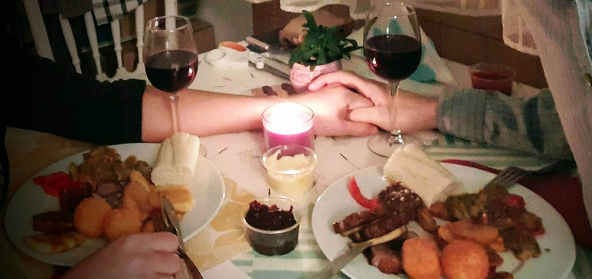

Cena
Comenzaremos con una sopa tradicional húngara:
El plato fuerte se servirá en fuentes compartidas en cada mesa, con las siguientes porciones:
Habrá una comida de medianoche:
Bebidas
Pueden consumir ilimitadamente las siguientes bebidas:
Tendremos algunas botellas de los siguientes licores: